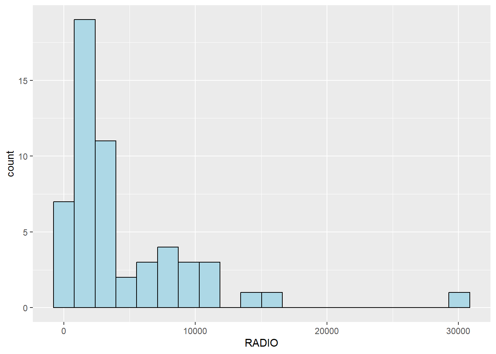
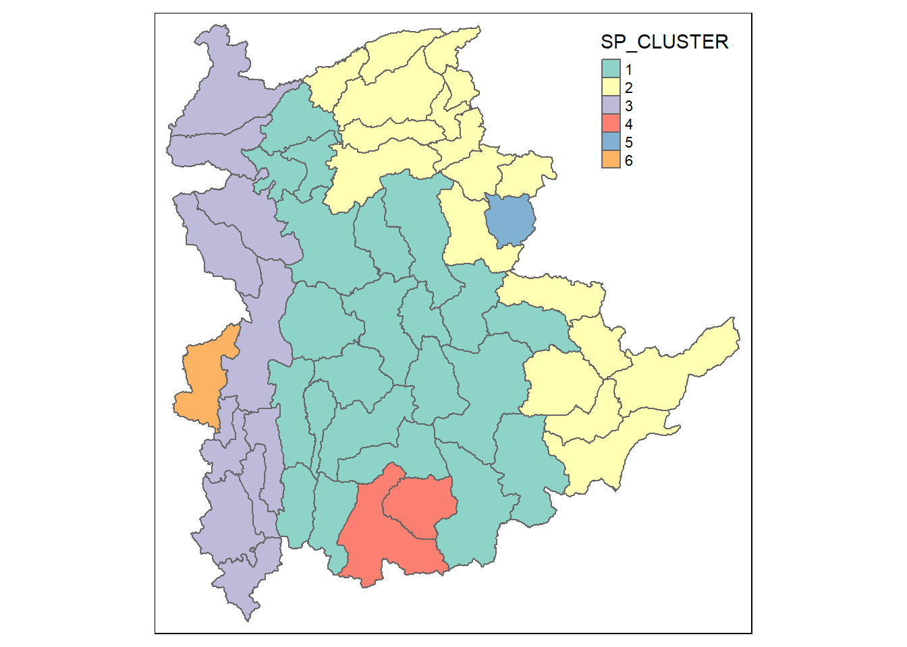

pacman::p_load(rgdal, spdep, tmap, sf, ggpubr, cluster, factoextra, NbClust, heatmaply, corrplot, psych, tidyverse, ClustGeo)In-class Exercise 3
Overview
This is in-class exercise 3
Getting Started
Installing and loading R packages
The code chunks below installs and launches these R packages into R environment.
factoextra is for factors analysis.
NbCluster provides different ways to access the clustering results.
Data Import and Preparation
The Myanmar Township Boundary GIS data is in ESRI shapefile format. It will be imported into R environment by using the st_read() function of sf.
The code chunks used are shown below:
shan_sf <- st_read(dsn = "data/geospatial",
layer = "myanmar_township_boundaries") %>%
filter(ST %in% c("Shan (East)", "Shan (North)", "Shan (South)"))Reading layer `myanmar_township_boundaries' from data source
`C:\sjynic\ISSS624\In-class_Ex\In-class_Ex3\data\geospatial'
using driver `ESRI Shapefile'
Simple feature collection with 330 features and 14 fields
Geometry type: MULTIPOLYGON
Dimension: XY
Bounding box: xmin: 92.17275 ymin: 9.671252 xmax: 101.1699 ymax: 28.54554
Geodetic CRS: WGS 84shan_sfSimple feature collection with 55 features and 14 fields
Geometry type: MULTIPOLYGON
Dimension: XY
Bounding box: xmin: 96.15107 ymin: 19.29932 xmax: 101.1699 ymax: 24.15907
Geodetic CRS: WGS 84
First 10 features:
OBJECTID ST ST_PCODE DT DT_PCODE TS TS_PCODE
1 163 Shan (North) MMR015 Mongmit MMR015D008 Mongmit MMR015017
2 203 Shan (South) MMR014 Taunggyi MMR014D001 Pindaya MMR014006
3 240 Shan (South) MMR014 Taunggyi MMR014D001 Ywangan MMR014007
4 106 Shan (South) MMR014 Taunggyi MMR014D001 Pinlaung MMR014009
5 72 Shan (North) MMR015 Mongmit MMR015D008 Mabein MMR015018
6 40 Shan (South) MMR014 Taunggyi MMR014D001 Kalaw MMR014005
7 194 Shan (South) MMR014 Taunggyi MMR014D001 Pekon MMR014010
8 159 Shan (South) MMR014 Taunggyi MMR014D001 Lawksawk MMR014008
9 61 Shan (North) MMR015 Kyaukme MMR015D003 Nawnghkio MMR015013
10 124 Shan (North) MMR015 Kyaukme MMR015D003 Kyaukme MMR015012
ST_2 LABEL2 SELF_ADMIN ST_RG T_NAME_WIN T_NAME_M3
1 Shan State (North) Mongmit\n61072 <NA> State rdk;rdwf မိုးမိတ်
2 Shan State (South) Pindaya\n77769 Danu State yif;w, ပင်းတယ
3 Shan State (South) Ywangan\n76933 Danu State &GmiH ရွာငံ
4 Shan State (South) Pinlaung\n162537 Pa-O State yifavmif; ပင်လောင်း
5 Shan State (North) Mabein\n35718 <NA> State rbdrf; မဘိမ်း
6 Shan State (South) Kalaw\n163138 <NA> State uavm ကလော
7 Shan State (South) Pekon\n94226 <NA> State z,fcHk ဖယ်ခုံ
8 Shan State (South) Lawksawk <NA> State &yfapmuf ရပ်စောက်
9 Shan State (North) Nawnghkio\n128357 <NA> State aemifcsdK နောင်ချို
10 Shan State (North) Kyaukme\n172874 <NA> State ausmufrJ ကျောက်မဲ
AREA geometry
1 2703.611 MULTIPOLYGON (((96.96001 23...
2 629.025 MULTIPOLYGON (((96.7731 21....
3 2984.377 MULTIPOLYGON (((96.78483 21...
4 3396.963 MULTIPOLYGON (((96.49518 20...
5 5034.413 MULTIPOLYGON (((96.66306 24...
6 1456.624 MULTIPOLYGON (((96.49518 20...
7 2073.513 MULTIPOLYGON (((97.14738 19...
8 5145.659 MULTIPOLYGON (((96.94981 22...
9 3271.537 MULTIPOLYGON (((96.75648 22...
10 3920.869 MULTIPOLYGON (((96.95498 22...glimpse(shan_sf)Rows: 55
Columns: 15
$ OBJECTID <dbl> 163, 203, 240, 106, 72, 40, 194, 159, 61, 124, 71, 155, 101…
$ ST <chr> "Shan (North)", "Shan (South)", "Shan (South)", "Shan (Sout…
$ ST_PCODE <chr> "MMR015", "MMR014", "MMR014", "MMR014", "MMR015", "MMR014",…
$ DT <chr> "Mongmit", "Taunggyi", "Taunggyi", "Taunggyi", "Mongmit", "…
$ DT_PCODE <chr> "MMR015D008", "MMR014D001", "MMR014D001", "MMR014D001", "MM…
$ TS <chr> "Mongmit", "Pindaya", "Ywangan", "Pinlaung", "Mabein", "Kal…
$ TS_PCODE <chr> "MMR015017", "MMR014006", "MMR014007", "MMR014009", "MMR015…
$ ST_2 <chr> "Shan State (North)", "Shan State (South)", "Shan State (So…
$ LABEL2 <chr> "Mongmit\n61072", "Pindaya\n77769", "Ywangan\n76933", "Pinl…
$ SELF_ADMIN <chr> NA, "Danu", "Danu", "Pa-O", NA, NA, NA, NA, NA, NA, NA, NA,…
$ ST_RG <chr> "State", "State", "State", "State", "State", "State", "Stat…
$ T_NAME_WIN <chr> "rdk;rdwf", "yif;w,", "&GmiH", "yifavmif;", "rbdrf;", "uavm…
$ T_NAME_M3 <chr> "မိုးမိတ်", "ပင်းတယ", "ရွာငံ", "ပင်လောင်း", "မဘိမ်း", "ကလော", "ဖယ်ခုံ", "…
$ AREA <dbl> 2703.611, 629.025, 2984.377, 3396.963, 5034.413, 1456.624, …
$ geometry <MULTIPOLYGON [°]> MULTIPOLYGON (((96.96001 23..., MULTIPOLYGON (…Importing aspatial data into R environment
ict <- read_csv ("data/aspatial/Shan-ICT.csv")Derive new variables using dplyr package
ict_derived <- ict %>%
mutate(`RADIO_PR` = `Radio`/`Total households`*1000) %>%
mutate(`TV_PR` = `Television`/`Total households`*1000) %>%
mutate(`LLPHONE_PR` = `Land line phone`/`Total households`*1000) %>%
mutate(`MPHONE_PR` = `Mobile phone`/`Total households`*1000) %>%
mutate(`COMPUTER_PR` = `Computer`/`Total households`*1000) %>%
mutate(`INTERNET_PR` = `Internet at home`/`Total households`*1000) %>%
rename(`DT_PCODE` =`District Pcode`,`DT`=`District Name`,
`TS_PCODE`=`Township Pcode`, `TS`=`Township Name`,
`TT_HOUSEHOLDS`=`Total households`,
`RADIO`=`Radio`, `TV`=`Television`,
`LLPHONE`=`Land line phone`, `MPHONE`=`Mobile phone`,
`COMPUTER`=`Computer`, `INTERNET`=`Internet at home`) Divide by 1000 as most literature states by per 1000 household. Can do in percentage too by multiply by 100.
Change variable names.
EDA using choropleth map
Joining geospatial data with aspatial data
shan_sf <- left_join(shan_sf, ict_derived, by=c("TS_PCODE"="TS_PCODE"))Simple feature data frame on the left and the attribute table on the right. To retain the spatial data, use the simple feature file for the join and keep it on the left so that I keep the geometric property.
Exploratory Data Analysis (EDA)
EDA using statistical graphics
ggplot(data=ict_derived, aes(x=`RADIO`)) + geom_histogram(bins=20, color="black", fill="light blue")
If it is not assigned, it will not save as an object. To use it again later in the script, assigned it to a variable name so that it will become an output object (shown in the environment).
Correlation Analysis
cluster_vars.cor = cor(ict_derived[,12:17])
corrplot.mixed(cluster_vars.cor, lower = "ellipse", upper = "number", tl.pos = "lt", diag = "l", tl.col = "black")
Picking up only column 12 to 17 using this notion [,12:17] and function cor is converting the data table to a correlation matrix.
Hierarchy Cluster Analysis
Extrating clustering variables
cluster_vars <- shan_sf %>%
st_set_geometry(NULL) %>%
select("TS.x", "RADIO_PR", "TV_PR", "LLPHONE_PR", "MPHONE_PR", "COMPUTER_PR")
head(cluster_vars,10) TS.x RADIO_PR TV_PR LLPHONE_PR MPHONE_PR COMPUTER_PR
1 Mongmit 286.1852 554.1313 35.30618 260.6944 12.15939
2 Pindaya 417.4647 505.1300 19.83584 162.3917 12.88190
3 Ywangan 484.5215 260.5734 11.93591 120.2856 4.41465
4 Pinlaung 231.6499 541.7189 28.54454 249.4903 13.76255
5 Mabein 449.4903 708.6423 72.75255 392.6089 16.45042
6 Kalaw 280.7624 611.6204 42.06478 408.7951 29.63160
7 Pekon 318.6118 535.8494 39.83270 214.8476 18.97032
8 Lawksawk 387.1017 630.0035 31.51366 320.5686 21.76677
9 Nawnghkio 349.3359 547.9456 38.44960 323.0201 15.76465
10 Kyaukme 210.9548 601.1773 39.58267 372.4930 30.94709As the first few columns belong to the simple features, use select() to select the features to do the hierarchical clustering.
Setting the geometry into null so that the hierarchical clustering can work. As the geometry is hidden and glued to the data frame, need to exclude them by setting it to null.
row.names(cluster_vars) <- cluster_vars$"TS.x"
head(cluster_vars,10) TS.x RADIO_PR TV_PR LLPHONE_PR MPHONE_PR COMPUTER_PR
Mongmit Mongmit 286.1852 554.1313 35.30618 260.6944 12.15939
Pindaya Pindaya 417.4647 505.1300 19.83584 162.3917 12.88190
Ywangan Ywangan 484.5215 260.5734 11.93591 120.2856 4.41465
Pinlaung Pinlaung 231.6499 541.7189 28.54454 249.4903 13.76255
Mabein Mabein 449.4903 708.6423 72.75255 392.6089 16.45042
Kalaw Kalaw 280.7624 611.6204 42.06478 408.7951 29.63160
Pekon Pekon 318.6118 535.8494 39.83270 214.8476 18.97032
Lawksawk Lawksawk 387.1017 630.0035 31.51366 320.5686 21.76677
Nawnghkio Nawnghkio 349.3359 547.9456 38.44960 323.0201 15.76465
Kyaukme Kyaukme 210.9548 601.1773 39.58267 372.4930 30.94709Copied the column to become the object id.
shan_ict <- select(cluster_vars, c(2:6))
head(shan_ict, 10) RADIO_PR TV_PR LLPHONE_PR MPHONE_PR COMPUTER_PR
Mongmit 286.1852 554.1313 35.30618 260.6944 12.15939
Pindaya 417.4647 505.1300 19.83584 162.3917 12.88190
Ywangan 484.5215 260.5734 11.93591 120.2856 4.41465
Pinlaung 231.6499 541.7189 28.54454 249.4903 13.76255
Mabein 449.4903 708.6423 72.75255 392.6089 16.45042
Kalaw 280.7624 611.6204 42.06478 408.7951 29.63160
Pekon 318.6118 535.8494 39.83270 214.8476 18.97032
Lawksawk 387.1017 630.0035 31.51366 320.5686 21.76677
Nawnghkio 349.3359 547.9456 38.44960 323.0201 15.76465
Kyaukme 210.9548 601.1773 39.58267 372.4930 30.94709Prepare the data so that the data object can be used.
Do not add in additional variable so that the hierarchical clustering can work. Only include those clustering variables.
Add in the object id so when the dendrogram is run, it will have the object id as the name of the initial cluster.
Computing proximity matrix
proxmat <- dist(shan_ict, method = 'euclidean')Using dist() to calculate the proximity matrix using 6 different distance calculation.
Results are in list form and not data frame.
Proximity matrix is a n by n matrix and the distance is calculated based on the 5 variables. Similarity/dissimilarity matrix as it can be interpret both ways.
Computing hierarchical clustering
Using hclust() from the base R.
hclust_ward <- hclust(proxmat, method = 'ward.D')hclust() is a base stats funtion. Only need two inputs, the proximity matrix and the method.
hclust() will return a list.
plot(hclust_ward, cex = 0.6)
cex parameter allow scaling and it allow scaling down of the hierarchical clustering so that the town names can be seen. cex 0.6 scale down the resolution to 60%.
Selecting the optimal clustering algorithm
m <- c( "average", "single", "complete", "ward")
names(m) <- c( "average", "single", "complete", "ward")
ac <- function(x) {
agnes(shan_ict, method = x)$ac
}
map_dbl(m, ac) average single complete ward
0.8131144 0.6628705 0.8950702 0.9427730 Select the one with the highest coefficient as it shows the strongest clustering structure.
function(x) runs the loop by passing the list as a parameter to the function.
Clustering strength determine based on the homogeneity.
map_dbl will map the variable to the result of the variable subjected into the function and shows the maps.
Gap Statistic Method
set.seed(12345)
gap_stat <- clusGap(shan_ict, FUN = hcut, nstart = 25, K.max = 10, B = 50)
# Print the result
print(gap_stat, method = "firstmax")Clustering Gap statistic ["clusGap"] from call:
clusGap(x = shan_ict, FUNcluster = hcut, K.max = 10, B = 50, nstart = 25)
B=50 simulated reference sets, k = 1..10; spaceH0="scaledPCA"
--> Number of clusters (method 'firstmax'): 1
logW E.logW gap SE.sim
[1,] 8.407129 8.680794 0.2736651 0.04460994
[2,] 8.130029 8.350712 0.2206824 0.03880130
[3,] 7.992265 8.202550 0.2102844 0.03362652
[4,] 7.862224 8.080655 0.2184311 0.03784781
[5,] 7.756461 7.978022 0.2215615 0.03897071
[6,] 7.665594 7.887777 0.2221833 0.03973087
[7,] 7.590919 7.806333 0.2154145 0.04054939
[8,] 7.526680 7.731619 0.2049390 0.04198644
[9,] 7.458024 7.660795 0.2027705 0.04421874
[10,] 7.377412 7.593858 0.2164465 0.04540947fviz_gap_stat(gap_stat)
Based on the result 2 clusters is the best. However, 2 is not ideal for analysis. Therefore, based on local optimum, 5 or 6 will be the next best number of clusters. 6 is slightly better than 5 so 6 should be chosen.
plot(hclust_ward, cex = 0.6)
rect.hclust(hclust_ward, k = 6, border = 2:5)
Mapping the clusters formed
groups <- as.factor(cutree(hclust_ward, k=6))Group them using cutree. Output is called groups which is a list object. There are 6 levels as there is 6 clusters.
shan_sf_cluster <- cbind(shan_sf, as.matrix(groups)) %>% rename(`CLUSTER`=`as.matrix.groups.`)Convert the groups into a matrix first then join it to the simple feature data frame. When converting the group into matrix, the field name is weird. So rename it to another name that can be easier to interpret.
qtm(shan_sf_cluster, "CLUSTER")
It does not form homogeneity.
Spatially Constrained Clustering - SKATER approach
Taking contiguity into consideration for the clustering and not just based on the attributes.
SKATER only take spatial object and do not take simple feature data frame. Need to convert the simple data frame into a spatial data frame.
shan_sp <- as_Spatial(shan_sf)Multiple data tables into a spatial data frame. Simple feature data frame is also in to spatial data frame less the geometry column.
Computing Neighbour List
shan.nb <- poly2nb(shan_sp)
summary(shan.nb)Neighbour list object:
Number of regions: 55
Number of nonzero links: 264
Percentage nonzero weights: 8.727273
Average number of links: 4.8
Link number distribution:
2 3 4 5 6 7 8 9
5 9 7 21 4 3 5 1
5 least connected regions:
3 5 7 9 47 with 2 links
1 most connected region:
8 with 9 linksComputing minimum spanning tree
Calculating edge costs
lcosts <- nbcosts(shan.nb, shan_ict)Similarity/assimilarity is treat as a cost in SKATER. Cost of traveling across the edges.
Conver the cost into a weight matrix
shan.w <- nb2listw(shan.nb, lcosts, style="B")
summary(shan.w)Characteristics of weights list object:
Neighbour list object:
Number of regions: 55
Number of nonzero links: 264
Percentage nonzero weights: 8.727273
Average number of links: 4.8
Link number distribution:
2 3 4 5 6 7 8 9
5 9 7 21 4 3 5 1
5 least connected regions:
3 5 7 9 47 with 2 links
1 most connected region:
8 with 9 links
Weights style: B
Weights constants summary:
n nn S0 S1 S2
B 55 3025 76267.65 58260785 522016004Computing minimum spanning tree
shan.mst <- mstree(shan.w)plot(shan_sp, border=gray(.5))
plot.mst(shan.mst, coordinates(shan_sp), col="blue", cex.lab=0.7, cex.circles=0.005, add=TRUE)
Computing spatially constrained clusters using SKATER method
clust6 <- skater(edges = shan.mst[,1:2], data = shan_ict, method = "euclidean", ncuts = 5)ccs6 <- clust6$groups
ccs6 [1] 3 3 6 3 3 3 3 3 3 3 2 1 1 1 2 1 1 1 2 4 1 2 5 1 1 1 2 1 2 2 1 2 2 1 1 3 1 2
[39] 2 2 2 2 2 4 1 3 2 1 1 1 2 1 2 1 1plot(shan_sp, border=gray(.5))
plot(clust6, coordinates(shan_sp), cex.lab=.7, groups.colors=c("red","green","blue", "brown", "pink"), cex.circles=0.005, add=TRUE)
Visualising the clusters in choropleth map
groups_mat <- as.matrix(clust6$groups)
shan_sf_spatialcluster <- cbind(shan_sf_cluster, as.factor(groups_mat)) %>% rename(`SP_CLUSTER`=`as.factor.groups_mat.`)
qtm(shan_sf_spatialcluster, "SP_CLUSTER")
cbind append the left table to the right table. Should not do any sorting.
hclust.map <- qtm(shan_sf_cluster, "CLUSTER") + tm_borders(alpha = 0.5)
shclust.map <- qtm(shan_sf_spatialcluster, "SP_CLUSTER") + tm_borders(alpha = 0.5)
tmap_arrange(hclust.map, shclust.map, asp=NA, ncol=2)
Spatially Constrained Hierarchical Clustering
dist <- st_distance(shan_sf, shan_sf)
distmat <- as.dist(dist)cr <- choicealpha(proxmat, distmat, range.alpha = seq(0, 1, 0.1), K=6, graph = TRUE)

D0 is the spatial data frame and D1 is the attributes data frame. At 0.4=3 alpha, only lose approximately 20% of the spatial homogeneity and gain 80% of the attributes homogeneity.
clustG <- hclustgeo(proxmat, distmat, alpha = 0.3)groups <- as.factor(cutree(clustG, k=6))shan_sf_Gcluster <- cbind(shan_sf, as.matrix(groups)) %>%
rename(`CLUSTER` = `as.matrix.groups.`)qtm(shan_sf_Gcluster, "CLUSTER")